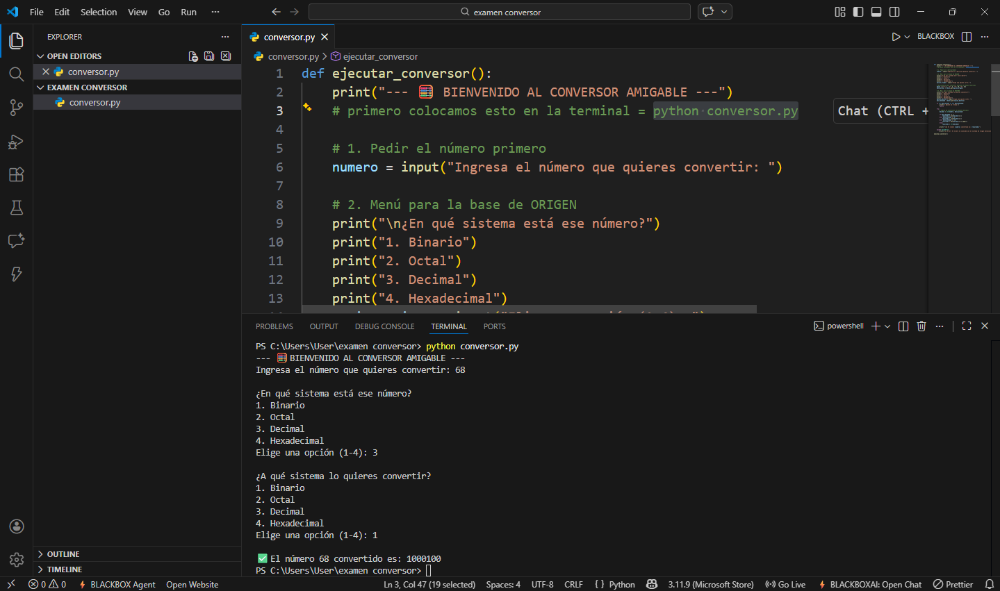

Esta aplicación web/desktop desarrollada en Python permite la conversión de valores entre cuatro sistemas fundamentales en electrónica y computación: Binario, Octal, Decimal y Hexadecimal. La lógica se basa en un "algoritmo de puente", donde cualquier entrada se normaliza a base 10 antes de ser transformada al destino final.
Para desarrollar este software, se aplicaron los siguientes pilares de la programación:
Son espacios de memoria que almacenan datos. En este proyecto, numero guarda la entrada del usuario, y base_actual almacena el sistema de origen. Usamos variables de tipo String (texto) y Integer (enteros).
Bloques de código reutilizables. Definimos ejecutar_conversor() para encapsular toda la lógica. Esto permite que el programa sea modular y organizado.
Utilizamos if, elif y else para que el programa "decida" qué conversión realizar basándose en la elección del usuario.
Es una técnica de seguridad para evitar que el programa se cierre por errores. Si el usuario ingresa una letra en un sistema binario, el bloque except captura el error y lanza un mensaje preventivo.
Paso 1: Definición de la interfaz de consola y captura de datos con input().
Paso 2: Creación de un Diccionario para mapear las opciones del menú con las bases reales (2, 8, 10, 16).
Paso 3: Uso de la función int(numero, base_actual). Este es el motor que convierte el texto en un valor numérico decimal procesable por la CPU.
Paso 4: Aplicación de rebanado de cadenas (Slicing) con [2:] para eliminar los prefijos técnicos de Python como 0b o 0x.
def ejecutar_conversor():
print("- BIENVENIDO -")
# primero colocamos esto en la terminal = python conversor.py
# 1. Pedir el número primero
numero = input("Ingresa el número que quieres convertir: ")
# 2. Menú para la base de ORIGEN
print("\n¿En qué sistema está ese número?")
print("1. Binario")
print("2. Octal")
print("3. Decimal")
print("4. Hexadecimal")
opcion_origen = input("Elige una opción (1-4): ")
# Diccionario para convertir opciones en bases numéricas
bases = {"1": 2, "2": 8, "3": 10, "4": 16}
base_actual = bases.get(opcion_origen)
# 3. Menú para la base de DESTINO
print("\n¿A qué sistema lo quieres convertir?")
print("1. Binario")
print("2. Octal")
print("3. Decimal")
print("4. Hexadecimal")
opcion_destino = input("Elige una opción (1-4): ")
base_deseada = bases.get(opcion_destino)
if not base_actual or not base_deseada:
print("Opción no válida.")
return
try:
# Lógica de conversión (el puente decimal)
decimal = int(numero, base_actual)
if base_deseada == 2:
resultado = bin(decimal)[2:]
elif base_deseada == 8:
resultado = oct(decimal)[2:]
elif base_deseada == 16:
resultado = hex(decimal)[2:].upper()
else:
resultado = str(decimal)
print(f"\n✅ El número {numero} convertido es: {resultado}")
except ValueError:
print("\n❌ Error: El número no coincide con el sistema de origen seleccionado.")
ejecutar_conversor()
Captura de pantalla del programa funcionando con éxito:
